RoboTTT：把执行历史写进权重，机器人怎样学会记忆与纠错？
Yunfan Jiang、Yevgen Chebotar、Ruijie Zheng 等 · RoboTTT: Context Scaling for Robot Policies · NVIDIA、Stanford、UT Austin · 官方 PDF 日期 2026-07-15；对应 arXiv:2607.15275v1，2026-07-16。整理于 2026-11-17。官方论文 · 结构化全文 · 项目页
机器人把电钻移到车顶螺丝附近，尝试了一次，却没有拧进去。此时的画面和“刚拿起电钻、准备接近螺丝”可能很相似，下一步却应该不同：前者需要抬起、调整位置再尝试，后者继续接近即可。单帧策略很难知道刚才发生了什么；简单追加一张历史图像，也未必包含真正决定动作的证据。
RoboTTT 把执行历史压缩进一个小神经网络的可更新权重。每次处理新的观察、状态与动作相关 token，模型先更新这组权重，再用它辅助动作预测。作者同时改变了训练方式：沿连续轨迹学习记忆，独立采样每个动作 chunk 的噪声等级，并通过分段反向传播支持长上下文。
它最值得借鉴的是“历史表示、序列训练、监督分工”这三个接口的配合。 人类视频可以提供上下文而不提供动作标签；机器人失败可以保留为历史，而模仿损失只监督人类纠正。全文先走通记忆计算，再说明这些数据怎样进入训练，最后检查收益究竟来自什么。以下为论文与附录解读，没有运行作者模型，也没有将未公开的代码细节补写成事实。
一、模型结构：历史怎样进入动作预测？
1.1 两种权重，对应两种学习过程
TTT 是 Test-Time Training，即测试时训练。它在每层内放入一个小模型 f_W，将这个模型的参数 W 当作随时间更新的记忆。主模型及投影矩阵属于慢权重：正常训练时更新，部署时固定。当前执行过程的 W_t 属于快权重：训练与部署时都随输入序列更新。每条新 rollout 从学习得到的 W₀ 开始，而非默认继承上一条任务的记忆。
当前特征 X_t 经过投影得到 K_t、V_t、Q_t。这里 key 是写入所用的输入，value 是内部学习目标，query 是读取记忆的输入。核心操作如下，公式按论文式 1–2 转写：
L_FW = || f_(W[t−1])(K_t) − V_t ||²
W[t] = W[t−1] − η · ∇_W L_FW
O_t = f_(W[t])(Q_t)
第一步让小模型学会从 key 预测 value，新的经验由此改变参数；第二步通过更新后的模型读取信息。内部目标由输入自身的投影构造，因此推理时无需知道正确动作，就能更新记忆。作者采用带 GeLU 的两层 MLP；内层使用梯度下降，学习率在 0.1 基础值上学习调整。
但这个内部误差并不直接判断“螺丝是否拧紧”。记忆怎样帮助正确行动，由外层动作损失训练。 固定大小的权重只能压缩历史，并不保证无损保存全部帧，也不能把“持续更新”直接等同于任务成功率单调提高。§2、附录 A.1，PDF p.3、20
1.2 注意力处理当前信息，TTT 处理跨时间信息
作者在 GR00T N1.7 上实现 RoboTTT：Eagle 负责视觉语言编码，16 层 Diffusion Transformer（DiT）负责动作生成，每个 DiT 层加入一个 TTT 层。看原图时，先区分左侧沿轨迹训练和右侧逐次执行；绿色小矩阵是持续传递的快权重。
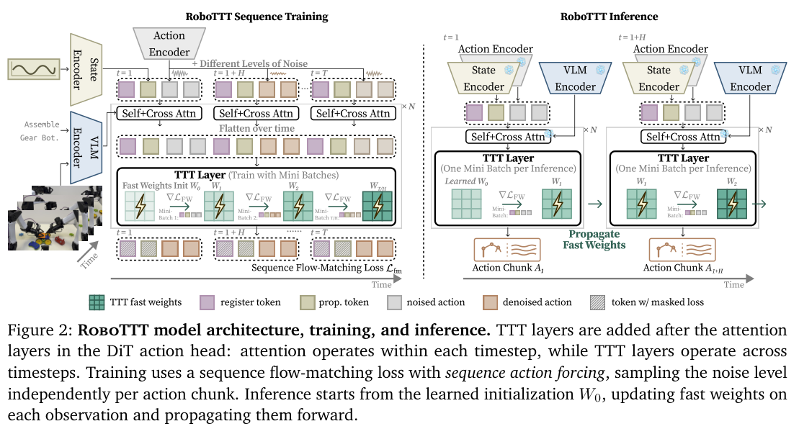
每个时间步包含视觉语言特征 Φ_t、状态 token q_t、带噪动作 token，以及 16 个可学习 register tokens。register tokens 是汇集当前信息的额外槽位。自注意力处理当前步的 register、状态和动作 token，交叉注意力读取当前步的视觉语言特征；随后这些注意力输出沿时间排列，进入 TTT。
大量视觉语言 token 不直接全部送入时序层，作者依赖 register tokens 携带视觉语言信息。这减少跨时间处理量，同时让历史包含感知、状态和动作相关表示。它不是纯历史视觉编码器，也没有显式预测未来图像。
继续用电钻例子：当前视觉说明工具现在在哪，状态说明机器人当前姿态；之前尝试留下的表示通过快权重参与当前动作计算，让策略有机会区分“首次接近”和“失败后重试”。这是结构提供的能力，是否实际学会需要后面的纠正数据与实验支持。§3.1，PDF p.4
1.3 为什么增加门控，而不是直接叠加新分支？
随机初始化的 TTT 输出可能扰乱预训练动作头。作者在注意力输出上加入受控残差，门控参数 α 为逐通道向量，初始化为 0.001：
O = O_attn + tanh(α) ⊙ O_TTT
下面的计算图展示了门控在 TTT 之后的位置；它控制的是新分支写回原表示的幅度。
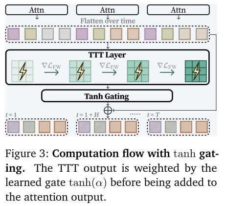
初始 tanh(α) 接近零，因此模型主要保留原有计算，随后通过动作任务训练学习新分支应该贡献多少。这与“预训练表示先稳定、再逐渐利用历史”的目的相符。附录给出的动作头参数量从 538M 增至约 690M，每层新增规模约 10M。固定大小状态意味着每步成本不随已处理历史线性增长，但新增计算和状态存储并非免费。
二、核心机制：上下文与动作监督怎样分工？
2.1 外层动作目标让内部记忆面向任务
训练样本是完整轨迹或连续子轨迹 ξ={(l,o_t,q_t,A_t)}，其中语言 l 在轨迹内共享。模型从 W₀ 开始，逐步进行内部记忆更新和动作预测，再对各时间步的 flow-matching 损失取平均。投影矩阵与快权重初始化通过外层任务损失学习；论文明确将 W₀ 的学习描述为经过内层更新的元学习。
直觉上，如果把某段历史写入记忆后，后续纠正动作更准确，外层梯度会推动投影与初始化朝有利于这种记忆的方向调整。作者没有给每个历史事件配一个显式“应该记住”的标签，记忆价值通过动作监督间接学习。这也意味着没有足够任务监督时，单纯增加快权重容量不保证模型会使用它。
2.2 人类视频：没有动作标签，也可以定义任务
作者在 Circuit 任务中将人类装配视频与同一配置的机器人轨迹拼接。视频段的直接动作损失被屏蔽，但继续更新快权重；机器人段使用视频留下的记忆预测动作，并计算动作损失。每种训练配置收集 5–20 段人类视频，初始布局有变化。
下面先看上排的人类装配，再看重置场景后的机器人执行。所有配置都用同一句“assemble circuit”，因此目标零件和顺序只能来自演示。
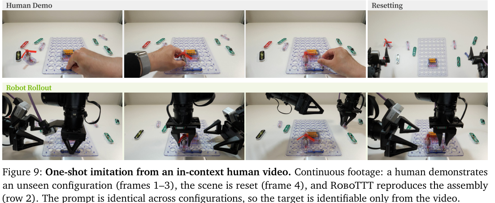
这不是把人类动作直接当机器人关节标签。训练要求策略从视频中提取配置，之后在自己的动作空间完成任务。测试时给一次未见配置的视频，模型再执行；one-shot 指测试条件，不代表训练前从未见过视频—机器人配对。
还要区分两种梯度语义：视频段不产生直接模仿损失，不等于它永远对慢权重没有训练影响。在未被分段截断的计算图内，后续机器人动作损失仍可能通过记忆更新路径影响相关参数。人类视频缺失动作、状态时的具体输入填充方式，论文未充分说明，不能据此编造 tensor 接口。§3.3、§4，PDF p.6、9
2.3 DAgger Distillation：失败作为上下文，纠正作为目标
DAgger 数据包含机器人执行与人类接管。传统纠正训练主要使用人类动作；这里作者保留失败前后的完整过程，让模型知道纠正回应了什么。
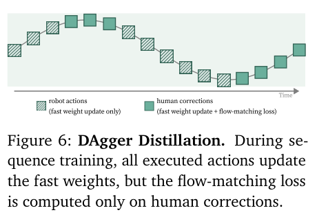
斜线方块表示机器人动作，仅参与记忆更新；实色方块表示人类纠正，同时提供动作监督。电钻尝试失败的过程被保留，人类“抬起—调整—再尝试”的动作成为目标。训练由此学习条件关系：已经这样尝试过且没有成功时，应当怎样改变行为。
下面是用于理解监督角色的教学表达，不是作者公开代码：
for each step in an ordered trajectory:
update fast memory using the current context
if action_source == human_correction:
contribute flow-matching action loss
else:
contribute no direct imitation loss
这个表达省略了具体 TTT 内层、去噪与梯度实现。尤其在含 mask 的 batch 中，损失除以全部时间步还是有效监督步会改变尺度；论文未充分披露该归约细节，复现时必须明确，而不能默认两者等价。
对异质数据最有价值的启发是：上下文有效性与动作标签有效性可以分别标记。 但这不能推出任意噪声数据都适合无条件写入记忆。失败—纠正具有连续因果背景；随机噪声、时间错位和严重标定错误可能同时污染上下文与目标，仍需区分。
三、训练与推理：长序列怎样训得动，部署时更新什么？
3.1 每个动作 chunk 独立采样噪声等级
在 flow matching 中，真实动作 chunk A_t 与高斯噪声 ε_t 混合为 A_t^τ，动作头预测从噪声向数据移动的速度。论文式 5 的核心计算为：
A_t^τ = τ_t · A_t + (1 − τ_t) · ε_t
velocity target = A_t − ε_t
L = (1/T) Σ_t E[ ||vθ(Φ_t, A_t^τ, q_t; W[t−1]) − (A_t−ε_t)||² ]
u_t ~ Beta(1.5, 1)
τ_t = 0.999 · (1 − u_t)
关键在每个时间步的 τ_t 独立采样，而不是一条序列共享一个值。这样相邻动作 chunk 可以具有不同难度。作者称之为 sequence action forcing，并观察到共享噪声等级的版本训练不稳定；他们提出的解释是整条序列同时太容易或太难，影响学习。
τ 接近 1 表示较接近真实动作，接近 0 表示噪声占主导。因此把单步代码改成 [batch,time,…] 形状时，必须检查 τ 是否被错误广播到全部时间步。不能仅凭代码可以运行，就认为实现了论文的序列训练。
3.2 TBPTT 保留历史状态，截断远距离梯度
完整时间反向传播需要保存整条轨迹的激活。作者将长序列切成多个片段，只在片段内反传；片段之间保留快权重数值，但 detach 梯度。
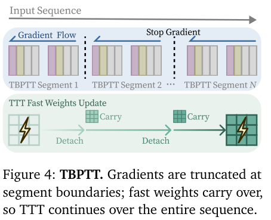
上半部分的蓝色箭头表示局部梯度范围，下半部分表示跨片段保留的状态。后面的动作仍可读取之前形成的记忆，但不能沿全部历史直接反传；W₀ 通过第一段得到梯度。显存主要受片段长度控制，训练总计算量仍随处理序列增长。
因此“8K 上下文”不等于“完整反向传播 8K 步”。论文未充分公开 TBPTT 片段长度、片段间外层优化步安排等细节。若用于现有训练系统，应把这些参数以及 episode reset 明确写入训练协议。§3.2，PDF p.5
3.3 先训练新增时序模块，再联合后训练
预训练混合双臂桌面机器人数据与第一视角人类数据，并特别强调长轨迹。先看长度分布，确认模型确实有机会接触较长连续过程。
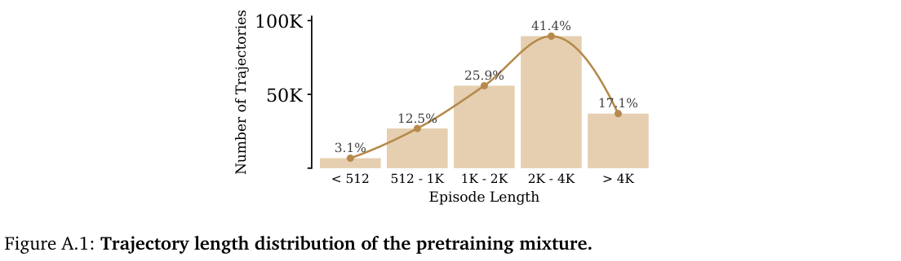
图中 2K–4K 占 41.4%，超过 4K 占 17.1%；总数据小时数和详细源混合比例没有完整披露。也不能仅由这张分布图推断每条 8K 训练样本如何构成，跨轨迹拼接等策略需要额外实现证据。
| 配置 | 预训练 | 任务后训练 |
|---|---|---|
| 可训练部分 | 新增 TTT/GDN 时序模块；冻结其余 GR00T 组件 | 全参数 |
| 上下文 | 逐步增至目标，最高 8K | 1K |
| 优化步数 | 30K | 20K |
| 硬件 | 16 × NVIDIA GB200 | 8 × NVIDIA GB200 |
| 每卡 batch | ≤4K 为 4；>4K 为 1 | 1 |
| 全局 batch | 对应 64 或 16 | 8 |
| 峰值学习率 | 2e-5 | 5e-5 |
| 调度 | Warmup–Stable–Decay | Cosine |
| 优化器、weight decay | AdamW，1e-5 | AdamW，1e-5 |
其他已公开参数包括 16 个 register tokens、RoPE θ=10000、内层基础学习率 0.1。内层学习率与表中外层 AdamW 学习率作用不同，不能互换。分阶段冻结策略意味着长上下文能力先在新增模块中学习，再在任务数据上联合适配。附录 A，PDF p.20
3.4 推理中的状态生命周期仍有复现缺口
每条 rollout 从 W₀ 起步，接收当前观察后更新快权重，用 k 步去噪生成动作 chunk，再向后传递快权重。作者在 YAM 双臂上部署，四路 RealSense D405 提供 480p RGB，推理工作站使用 RTX 5090，报告控制频率为 30 Hz。
但控制频率不等于每秒完整执行 30 次 VLM 加多步去噪。原图用 t 与 t+H 展示 chunk 推进，正文未充分说明 H、k、执行步数，以及多次去噪评估中快权重究竟何时提交。因此不能给出未经证实的单步延迟、TTT 更新频率或额外开销百分比。
对实际工程，尤其需要明确：去噪过程中哪些快权重是临时状态，哪些状态跨控制请求保存；每个环境实例是否独立持有状态；episode 结束如何重置。固定状态大小解决历史增长成本，并不自动解决这些接口。
四、实验结果：改善了什么，哪些比较仍有限？
4.1 完成得分与完整成功率分别回答什么？
实验包含 Pup Go Car、Circuit、Gear Bot 三个双臂装配任务，分别收集 8、6、5 小时真机数据，平均轨迹约 2、1、5 分钟。Circuit 约有 80 种配置，其中 20 种训练，其余 60 种作为测试配置池；实际 rollout 次数远少于 60，因此不能说逐一验证了全部测试配置。
主结果先看完成得分：这是按任务步骤的 rubric 评分，允许部分完成。
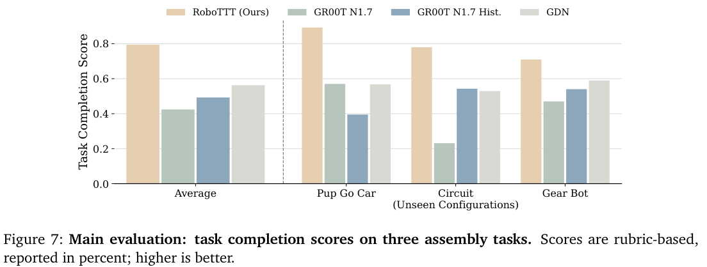
RoboTTT 平均约 79%，GR00T N1.7 约 42%，GDN 约 56%。摘要的“提升 87%”指相对得分提升；它不是成功率提高 87 个百分点。具体评分规则也不同：Gear Bot 多个步骤各加 0.1，Circuit 的装配顺序错误不给部分分，Pup Go Car 则对抓取、定位和拧紧设置不同分值。
接下来检查完整成功次数，避免把阶段进步当成可靠完成整项任务。
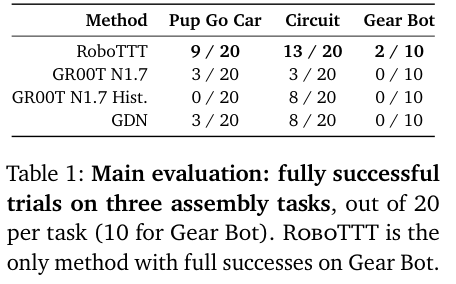
RoboTTT 在三个任务分别为 9/20、13/20、2/10；最难的五分钟 Gear Bot 仍只有两次完整成功。单步基线分别为 3/20、3/20、0/10。GDN 使用匹配层位置、门控和参数量的结构，后训练数据相同；非序列基线按计算预算匹配。这比跨不同视觉输入比较更有说服力，但评估数量仍有限，不能推出对所有长任务普遍有效。§4、附录 B
4.2 上下文长度增加：有收益，但不是等算力定律
下面比较预训练上下文从 128 扩展到 8K 的闭环得分。该实验在主结果使用的 DAgger 训练之前完成，不能把两组数字直接拼接归因。
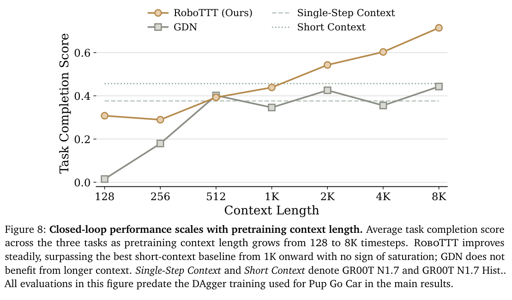
正文报告 RoboTTT 从 1K 的 43.9% 提高到 8K 的 71.5%，约 63% 相对提升；摘要使用 62%，这里保留正文具体数值与差异。曲线在 128 到 256 略有下降，整体趋势尤其在 512 以后向上，所以“每个点都单调提高”并不准确。GDN 没有相同的持续增长趋势。
这个实验支持：在作者配方下，更长上下文预训练有实际收益。但长序列增加训练成本，且不同长度使用不同 batch，尚不能据此建立等数据、等算力的纯上下文 scaling law。作者关于非线性快模型更适合压缩重复机器人流的解释是合理假设，需要结合消融判断。
4.3 视频模仿与外部扰动：数据条件不能省略
视频条件的实验中，所有配置使用同一语言指令，只让演示视频指定目标；测试在未见配置上进行。
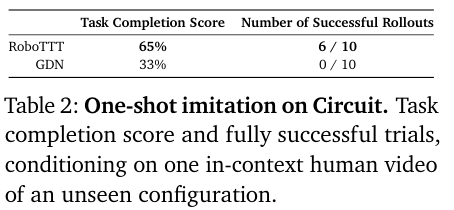
RoboTTT 完整成功 6/10、得分 65%；GDN 为 0/10、得分 33%。这说明该训练配方能在特定装配族中利用演示上下文，不等于跨任意任务、人类视角和机器人形态的通用视频模仿。
扰动实验在机器人装上车顶或轮胎后，由人取下零件，检查是否重新安装。
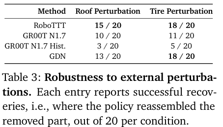
RoboTTT 分别为 15/20 与 18/20，GDN 为 13/20 与 18/20。作者额外收集 30 分钟扰动数据参与共同训练，不能把恢复能力描述为完全零样本涌现。轮胎条件下两种长上下文方法持平，也说明恢复收益并非全部独属于 TTT。
4.4 失败数据怎样使用，比是否保留更重要
DAgger 实验使用共同的 100 条轨迹：50 条由 RoboTTT 收集，50 条由 GR00T N1.7 收集。各方法使用同一数据池，比较只监督纠正与保留完整上下文的差异。
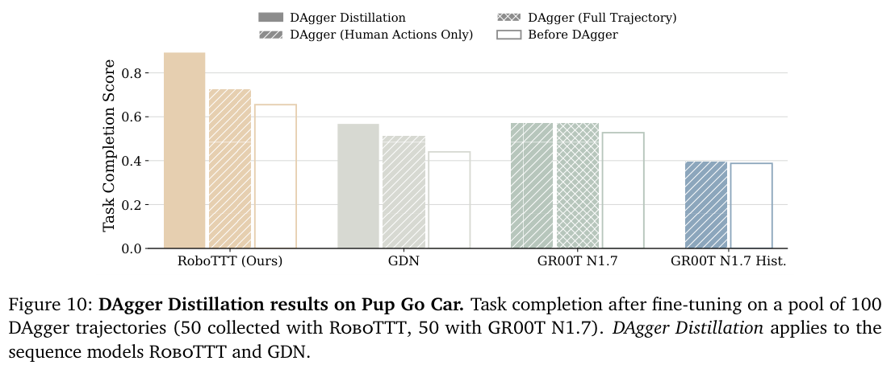
RoboTTT 的 DAgger Distillation 相对训练前提高约 36%，GDN 提高约 29%；标准 DAgger 在两个序列模型上平均约提高 13%。对于 GR00T N1.7，把机器人次优动作也当标签，与只监督人类纠正都得到 57% 得分。这个对照支持作者的关键判断：次优动作的价值在提供纠正背景，直接模仿它们没有带来相同收益。
下面的例子展示行为层面的含义：工具错过螺丝后抬起重试，再次调整，最终完成。
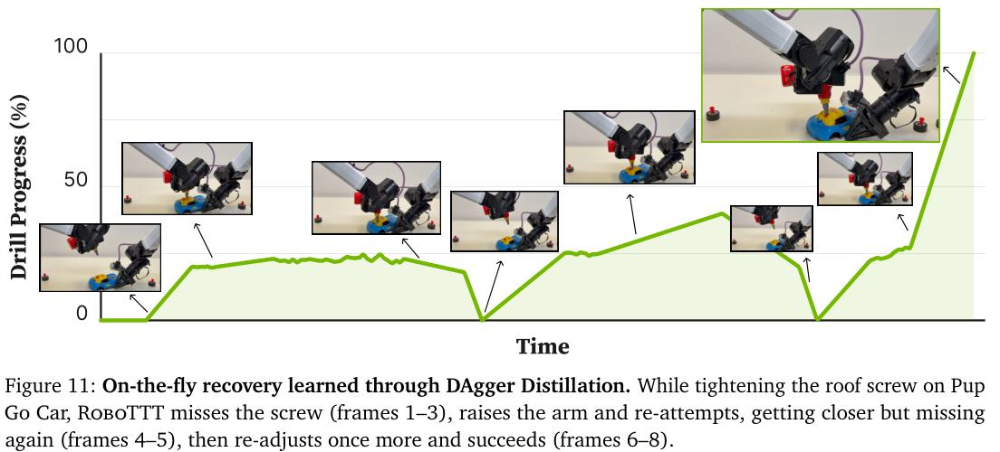
这张图是定性案例，不能单独量化恢复概率；它把前面的得分提升与实际行为联系起来。测试时没有人类持续提供正确动作或奖励，策略使用的是训练时学到的纠正模式和当前历史，不能描述为现场无限自主强化学习。
4.5 哪些组件真正影响表现？
消融同时检查独立噪声等级、快模型容量，以及状态、动作、register tokens 的作用。
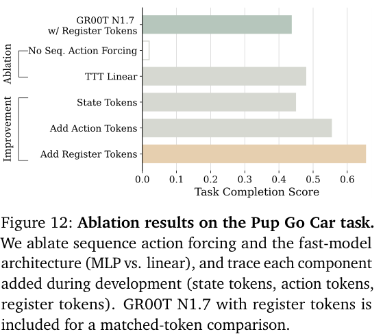
去掉 sequence action forcing 后几乎无法形成有效进展；线性快模型仍优于基础策略，但正文报告比 MLP 版本低约 27%。在仅有状态 token 的版本上增加动作 token 带来约 23% 相对提升，再加 register tokens 提高约 18%。给基础 GR00T 直接加 register tokens 没有相同收益，支持它们与时序模块协同，而非“多几个 token 自然更好”。
这些消融集中在 Pup Go Car，不能视为所有任务上的普遍因果定律。但它们明确提醒实现者：只复制 TTT 层、忽略序列噪声与输入组织，不是论文验证过的完整方法。
总结：对 XR1，先重建序列与监督接口，再决定快权重架构
RoboTTT 的主要贡献是将可学习快权重、长序列训练和上下文监督分离组合起来。它与显式关键帧记忆的区别在于：前者把连续过程压缩到参数状态，后者保留可检索图像。固定状态利于长时间运行，但也带来内层梯度、状态生命周期、记忆干扰与调试难度。
以下是针对 XR1 的迁移建议，并非论文已完成的实验。继续使用 Lance 可以满足数据存储需要，重要变化在采样与训练接口：
| 顺序 | 需要做的事 | 希望回答的问题 |
|---|---|---|
| 1 | 保留 episode、连续片段、时间顺序与重置边界 | 后面的监督是否真正看到同一条轨迹的历史？ |
| 2 | 区分 context-valid 与 action-loss-valid，记录人类接管和动作来源 | 哪些失败值得作为背景，哪些动作值得模仿？ |
| 3 | 在已有时序策略比较只用纠正与保留完整上下文 | 数据组织本身是否改善恢复能力？ |
| 4 | 加入带近零门控的快权重分支，从短序列开始 | 新模块是否稳定利用历史，而非扰乱原策略？ |
| 5 | 比较不同上下文并记录有效样本量、算力和时延 | 增益来自历史长度，还是额外训练计算？ |
完整接入前还需明确动作 chunk 长度、去噪期间的快权重提交规则、TBPTT 片段长度、带 mask 损失的归约，以及视频缺失状态/动作的填充方式。它们是公开材料中的复现缺口，不应凭经验冒充作者实现。
最值得优先采用的思想是：保留执行过程提供的因果背景，同时精确控制哪些动作产生监督。 这项改动不必等待完整 RoboTTT 架构，也不要求先换掉现有存储格式。